Turtle Graphics Gallery¶
Browse these examples to see what turtle graphics can do. Each pattern is runnable in your browser — click the link to open the interactive lab.
-
Rainbow Square Spiral
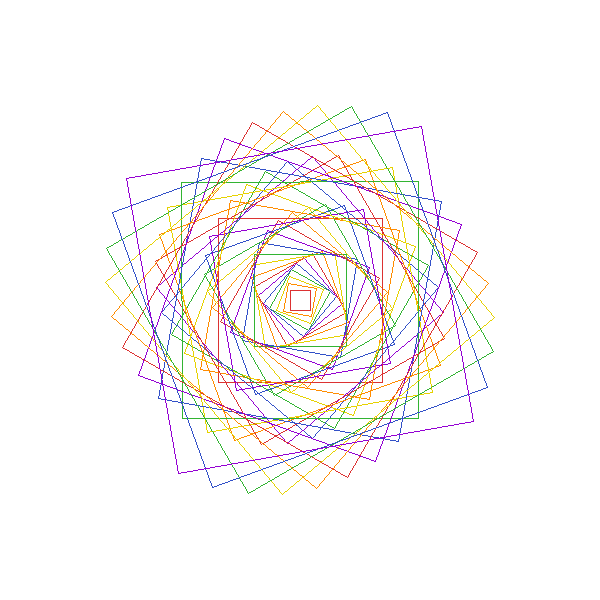
Draw a square, rotate 10°, draw a larger square — repeat 36 times. Colors cycle through red, orange, yellow, green, blue, and violet. Teaches:
forloops, color lists, and the modulo operator. -
Pinwheel of Triangles
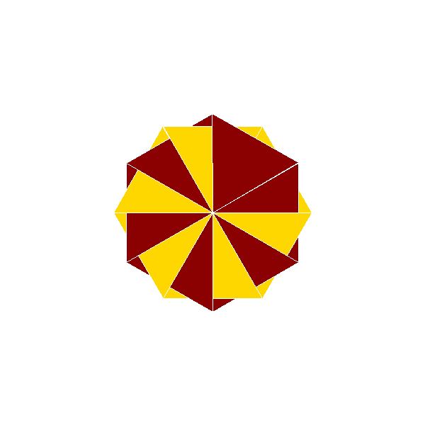
Draw 12 equilateral triangles, each rotated 30° from the last. Gold and dark-red blades fan out from the center like a spinning wheel. Teaches: the
360 / nrotation formula,begin_fill(), and radial symmetry. -
Nested Circles
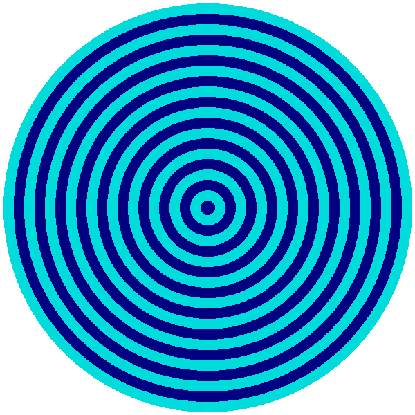
Twenty concentric rings alternating cyan and navy pulse outward from the center. Teaches:
circle(),goto()for centering, and why drawing order matters. -
Starburst
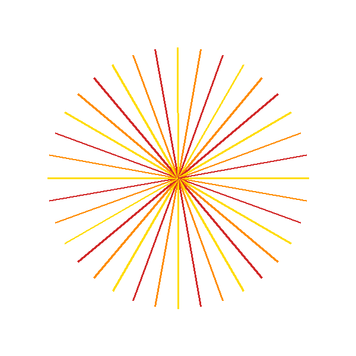
Thirty-six spokes burst from the center, cycling yellow → orange → red. Teaches: forward + backward as a spoke, color cycling with modulo, and 360° math.
-
Checkerboard Grid
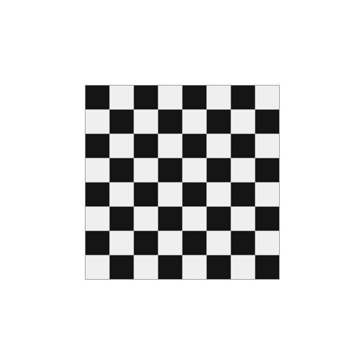
An 8×8 chessboard built entirely from nested loops and coordinate arithmetic. Teaches: nested
forloops, position formulas, and(row + col) % 2for alternation. -
Diagonal Stripe Field
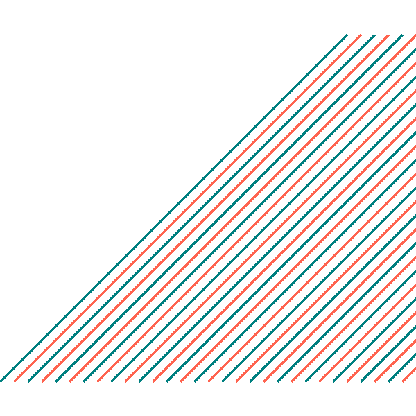
Thirty parallel diagonal lines alternate teal and coral across the canvas. Teaches:
setheading()for absolute angles, spacing stripes with a loop counter formula. -
Dotted Grid
A 10×10 grid of dots that grow larger toward the bottom, creating an illusion of depth. Teaches:
dot(), nested loops, and mapping a loop variable to a visual property. -
Color Wheel Wedges
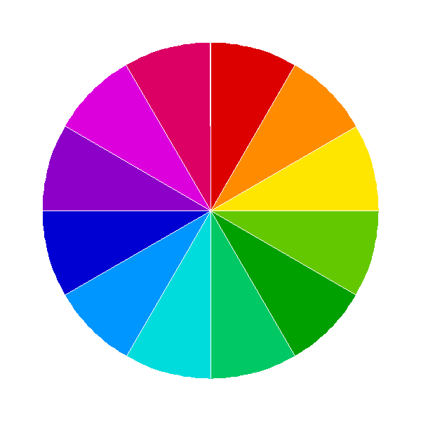
Twelve pie-slice wedges fill the circle with every hue of the color wheel. Teaches:
360 / nwedge angles, arc approximation, and iterating a color list. -
Pentagon Chain
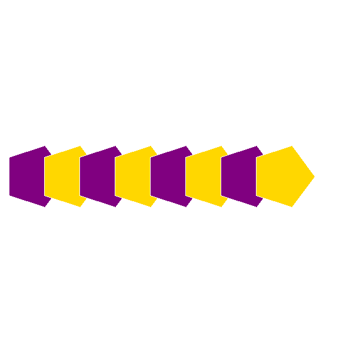
Ten pentagons march in a row, alternating purple and gold, corner-to-corner. Teaches: the
360 / sidesexterior angle formula and chaining shapes horizontally. -
Overlapping Squares
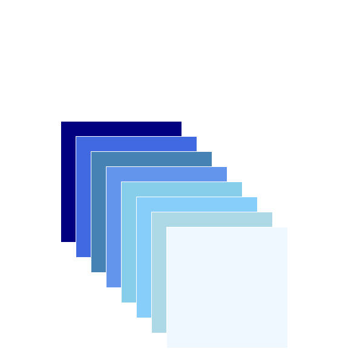
Eight squares offset diagonally cascade from dark navy to near-white. Teaches: draw order, diagonal offset positioning, and color gradient planning.
-
Flower with Petal Function
Eight petals assembled by calling a
petal(size, color)function in a loop. Teaches: defining and calling parameterized functions, arc-based petal geometry. -
Honeycomb Grid
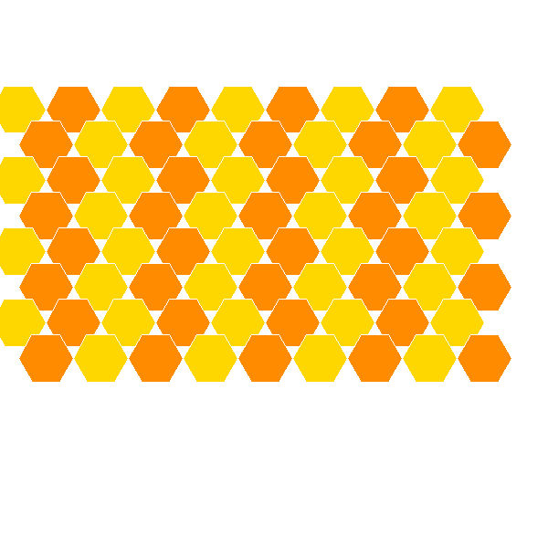
Dozens of hexagons tile the canvas perfectly in gold and orange. Teaches:
hexagon()functions, offset-row tiling math, and why hexagons tile perfectly. -
City Skyline
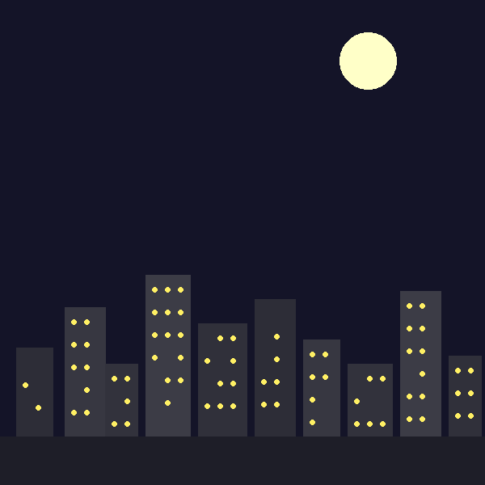
Ten skyscrapers of varied heights fill a night skyline with glowing windows. Teaches: multi-parameter functions, composing a scene from repeated calls, nested loops.
-
Snowflake Arms
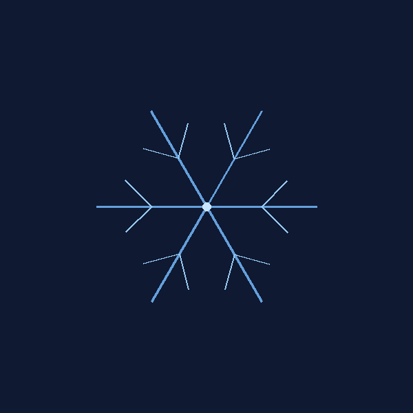
Six identical arms with side twigs form a crystalline snowflake. Teaches:
arm()function, returning turtle to its start state, six-fold symmetry. -
Polka Dot Canvas
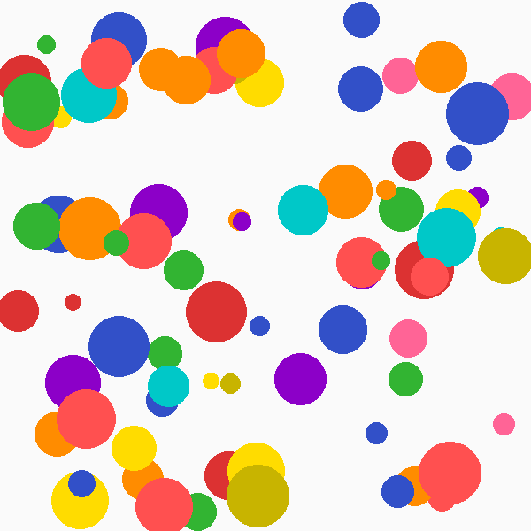
Eighty colorful dots scattered at random sizes and positions across the canvas. Teaches:
random.randint(),random.choice(),random.seed()for reproducibility. -
Brick Wall
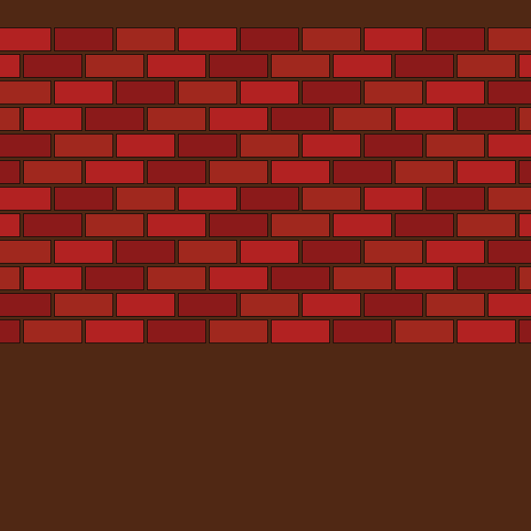
Eight rows of staggered red-brown bricks with dark mortar lines. Teaches:
fillcolor/pencolorseparation, the offset-row tiling pattern, ternary expressions. -
Stars of Different Sizes
Fifteen gold and red stars scattered across a dark background at random sizes. Teaches: the 144° star angle, four-parameter functions, and random scatter.
-
Traffic Light Stack
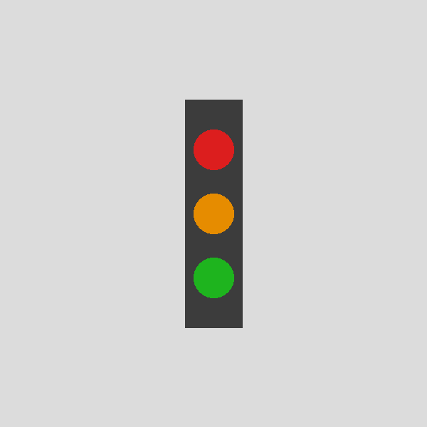
A three-signal traffic light assembled from one rectangle and three dot calls. Teaches: decomposing real objects into primitives, layered draw order, positional parameters.
-
Fish School
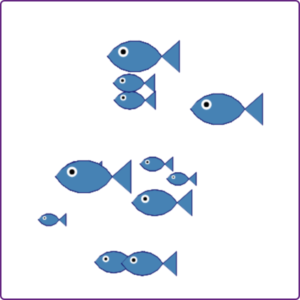
Fifteen blue fish of varied sizes swim through a deep blue ocean. Teaches: building creature shapes from arc + triangle, parameter-driven variation.
-
Mountain Range
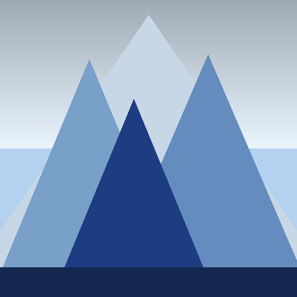
Three layers of mountains recede into a pale sky using color value for depth. Teaches: back-to-front layering,
goto()waypoints, atmospheric perspective with color. -
Archimedean Square Spiral
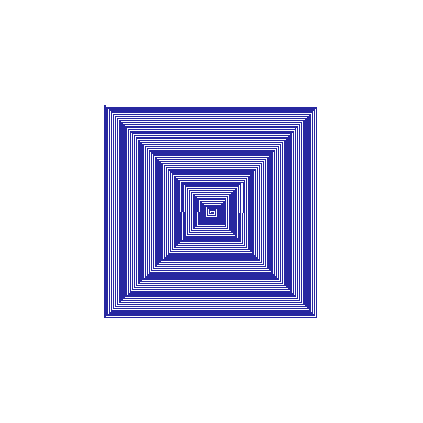
A square spiral that grows outward using nothing but a fixed turn and a growing step. Teaches: how
step += ncreates a spiral, the effect of changing the turn angle. -
Rainbow Line Spiral
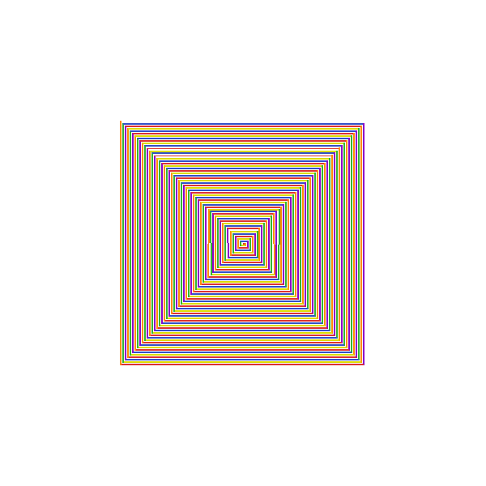
The Archimedean spiral revisited — each segment colored by cycling six rainbow hues. Teaches:
i % len(colors)for color cycling, how period mismatch creates diagonal banding. -
L-System Plant
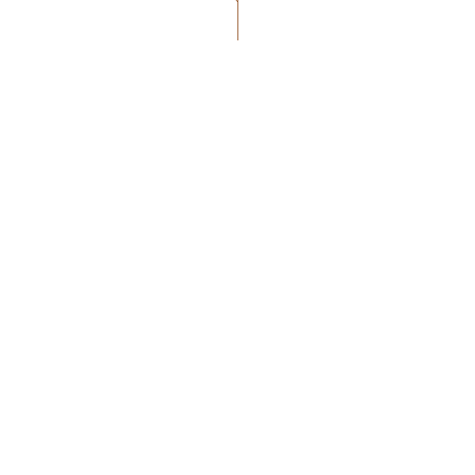
Lindenmayer rules expand a single character into a branching plant over 5 generations. Teaches: L-systems, string rewriting, bracket stack for branching, depth-first growth.
-
Turtle Maze Generator
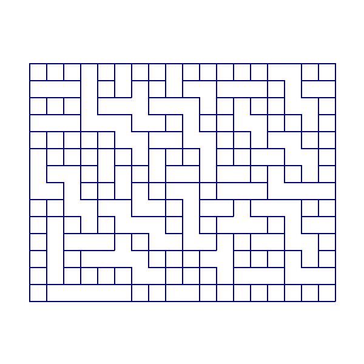
Recursive backtracker DFS generates a perfect maze by carving walls in a grid. Teaches: 2D grids, depth-first search, recursion, wall carving with sets.
-
Parametric Surface Projection
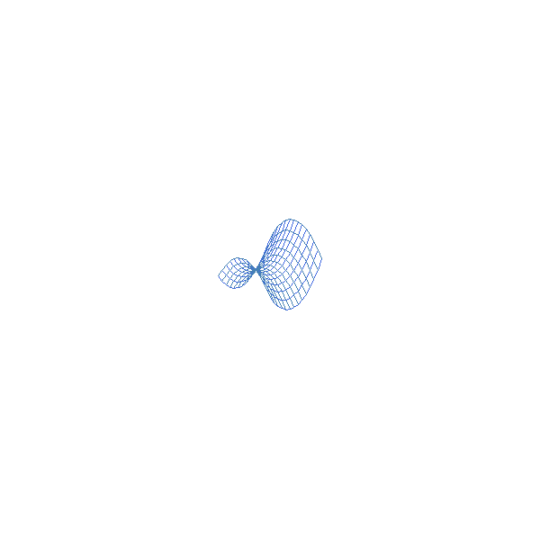
3D saddle surface projected onto 2D with isometric coordinates and wireframe mesh. Teaches: parametric surfaces, isometric projection,
x(u,v)y(u,v)z(u,v). -
Lindenmayer Snowflake Collection
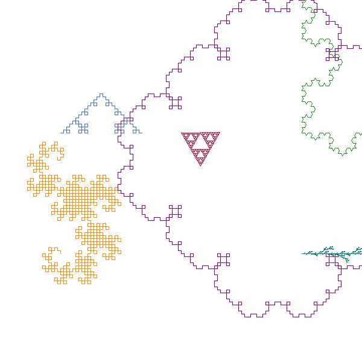
Six L-system rule sets — Koch, Sierpiński, hex, dragon, quadratic, plant — in a grid. Teaches: universal L-system interpreter, data-driven rendering, comparative fractals.
-
Generative Art Loop
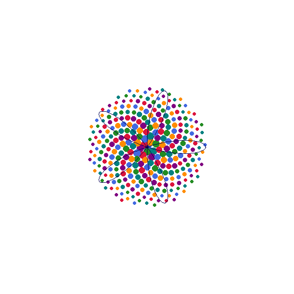
Golden spiral dots + rose curve + mini-spirals = layered generative composition. Teaches: combining techniques, seed-based generation, layered composition design.
-
Bouncing Ball
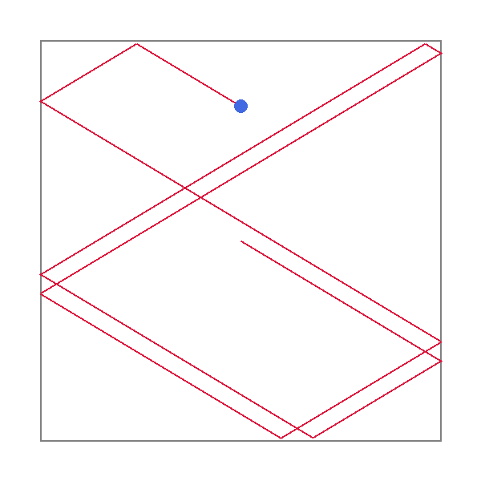
Animated ball bouncing inside a box — velocity, position, wall collision detection. Teaches: animation loop,
tracer(0),update(), velocity reversal on collision. -
Clock Face
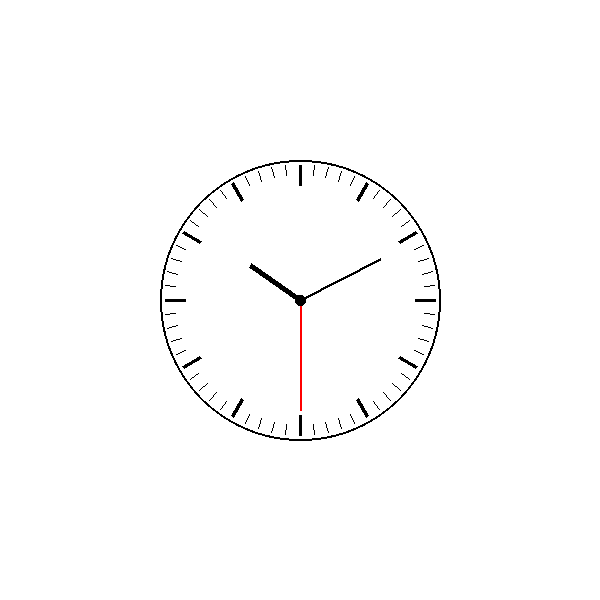
Analog clock with tick marks and three hands computed from hours/minutes/seconds. Teaches: angle math for clock hands, tick mark placement,
setheading. -
Spirograph Drawer
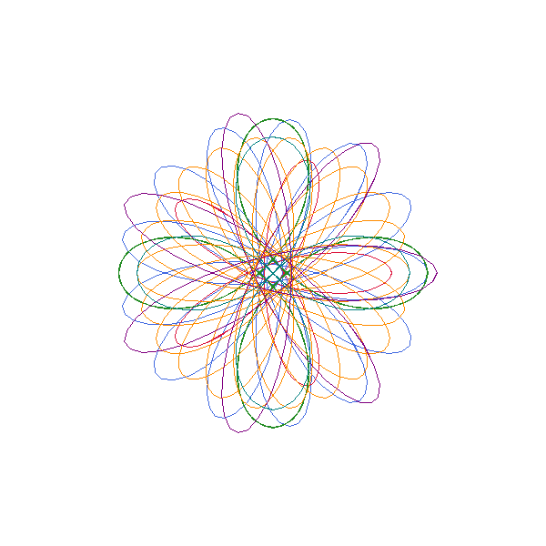
Six overlapping hypotrochoid curves drawn sequentially in different colors. Teaches: parameter lists, animation with
tracer(0), layered generative art. -
Spiral Text
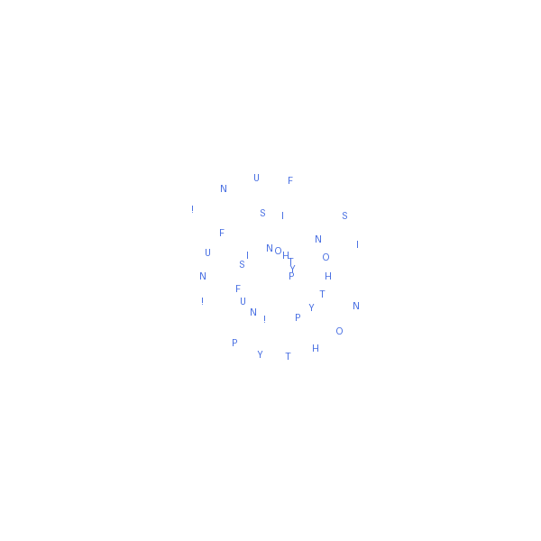
Characters placed along a spiral using polar coordinates and
turtle.write(). Teaches:enumerate, polar coordinates,setheading, text placement. -
Seven-Segment Display
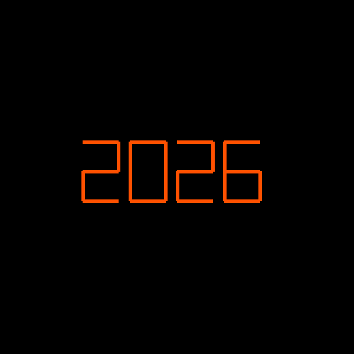
Digits rendered from a dictionary of 7 on/off segment flags — like a digital clock. Teaches: dictionaries, bitmasks, conditional drawing, data-driven rendering.
-
Circular Name Badge
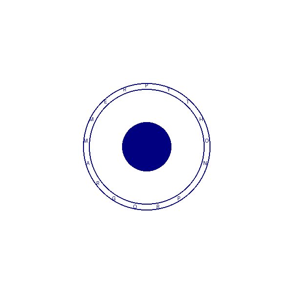
Text arranged around a circle like a coin or official seal. Teaches: angular text placement,
setheading, circular geometry,write(). -
Name in Block Letters
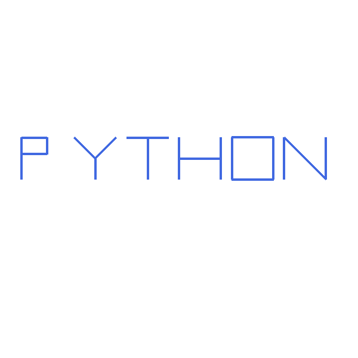
Letters defined as stroke waypoints and rendered with
goto()— a vector font. Teaches: dictionaries of coordinates,goto()rendering, font data structures. -
Rotating Squares Illusion
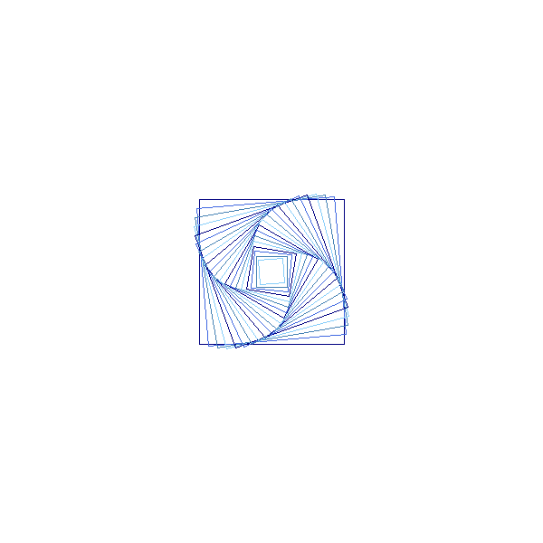
Concentric squares each rotated 5° more — static geometry that appears to spin. Teaches: nested loops, angle offset, Op Art illusions,
sqrt(2)geometry. -
Café Wall Illusion
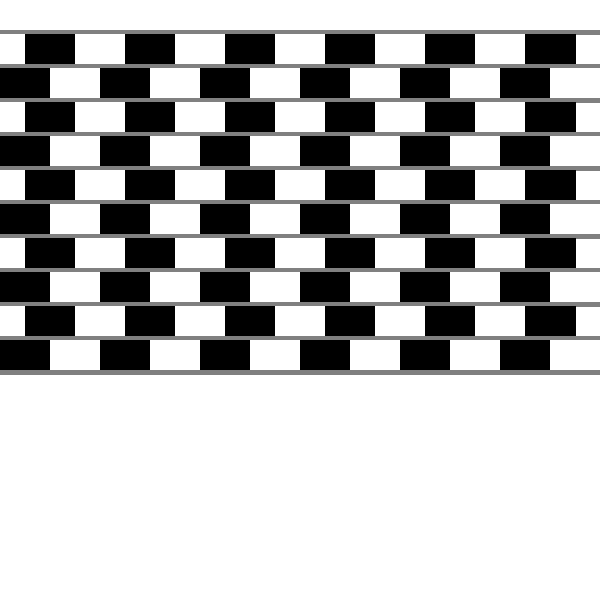
Offset rows of black/white tiles make perfectly horizontal gray lines look slanted. Teaches: tile grids, row offset, filled rectangles, perception vs reality.
-
Moiré Pattern
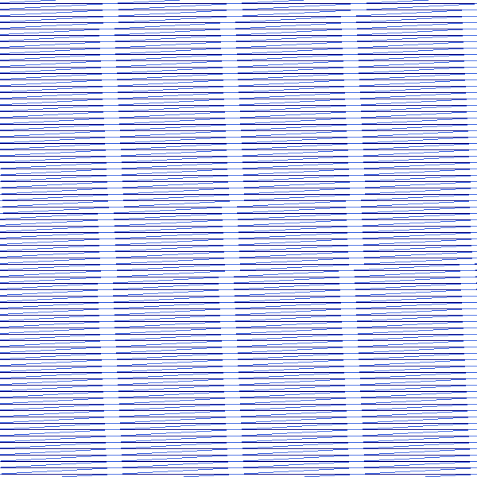
Two sets of parallel lines at slightly different angles create beating interference. Teaches: line grids, angle rotation, Moiré period formula, parametric lines.
-
Bridget Riley Waves
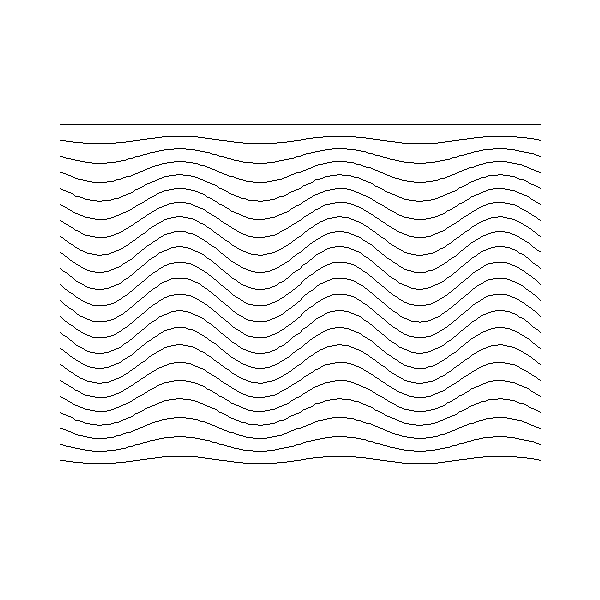
Parallel sine curves with parabolic amplitude — static lines that appear to ripple. Teaches: sine waves, amplitude gradients, Op Art,
math.sin. -
Expanding Hexagons
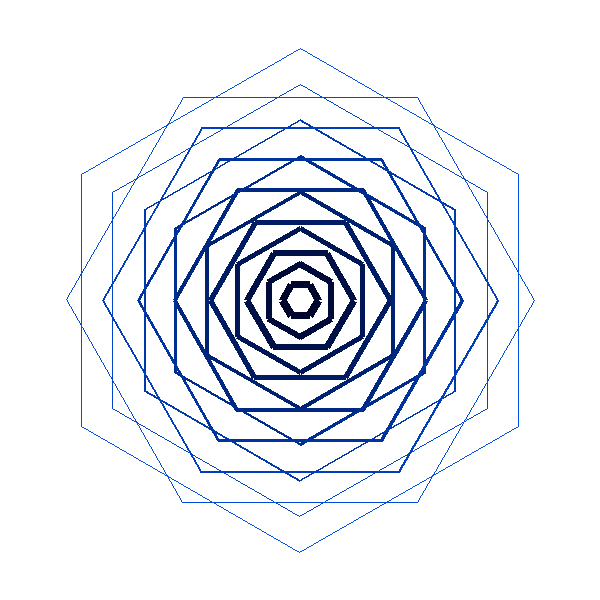
Concentric hexagons alternating 0° and 30° with color gradient — hexagonal tunnel illusion. Teaches: hexagon geometry, rotation alternation, color gradients, depth illusions.
-
Lissajous Figure
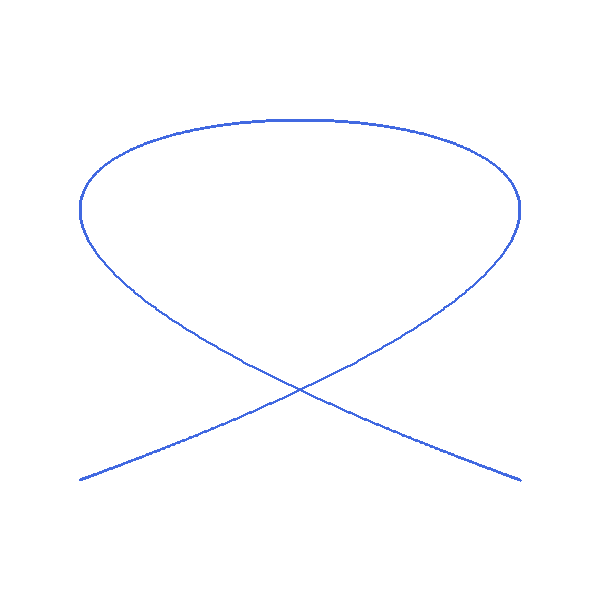
x=A*sin(a*t+δ), y=B*sin(b*t)— frequency ratio controls loop count. Teaches: parametric equations,math.sin, oscilloscope math. -
Rose Curve
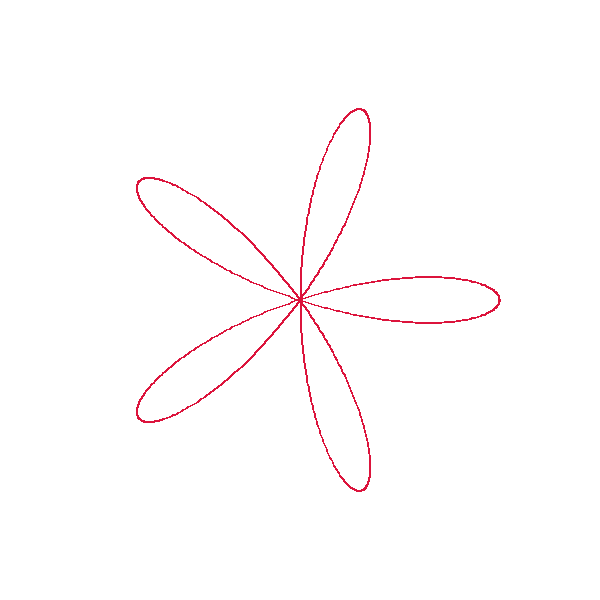
r = cos(k*theta)in polar coordinates — odd k gives k petals, even k gives 2k. Teaches: polar equations, polar-to-Cartesian conversion, petal counting rules. -
Spirograph
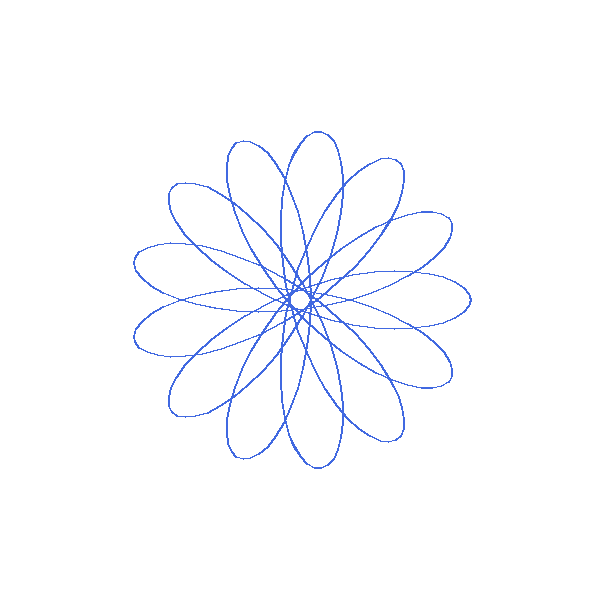
Hypotrochoid: a point on a small circle rolling inside a larger one. Teaches: parametric equations,
R,r,dparameters, closed curve conditions. -
Butterfly Curve
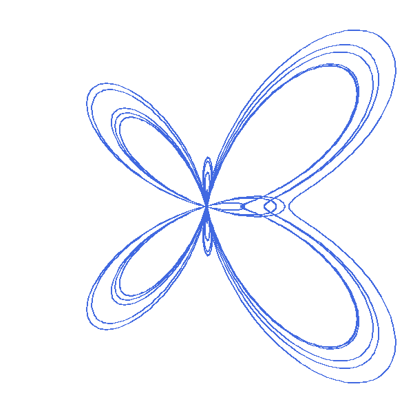
r = exp(cos t) - 2cos(4t) + sin⁵(t/12)— complex shapes from one equation. Teaches:math.exp, combining trig terms, 12π periodic curves. -
Epicycloid Star
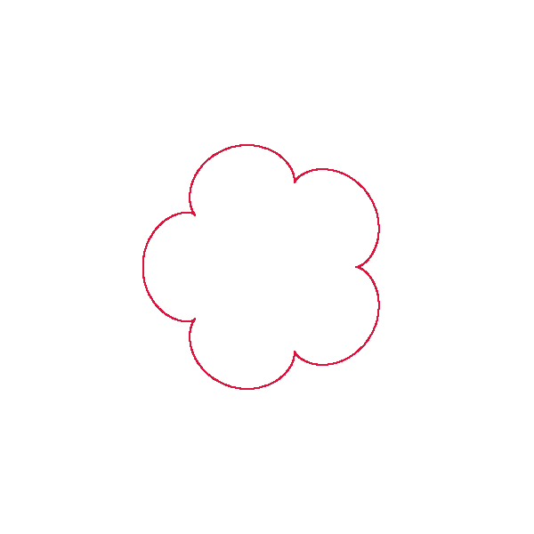
Small circle rolling outside a large one —
R/rinteger gives that many cusps. Teaches: epicycloid parametric equations, cusp geometry, star construction. -
Sunflower Seed Spiral
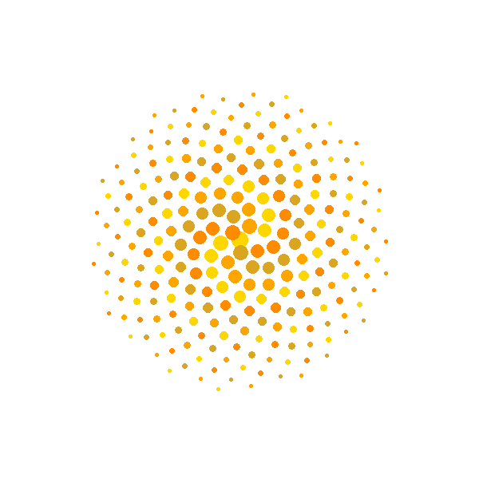
Golden angle (137.5°) places dots like seeds in a real sunflower head. Teaches: polar coordinates,
math.sqrt,math.exp, and Fibonacci packing. -
Spider Web
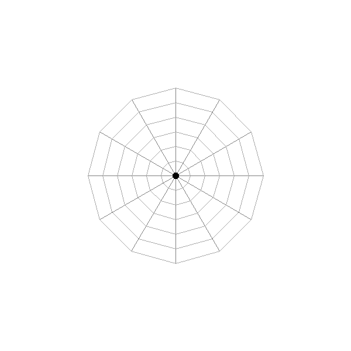
12 radial spokes and 6 concentric rings drawn with polar coordinates and
goto(). Teaches: radial + ring geometry, polar-to-Cartesian conversion, nested loops. -
Lightning Bolt
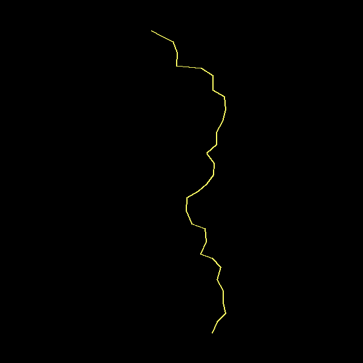
Recursive midpoint displacement turns a straight line into a jagged bolt. Teaches: recursion, perpendicular vectors, Gaussian randomness.
-
Galaxy Spiral Arms
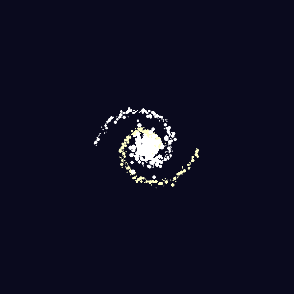
Two logarithmic spiral arms with Gaussian scatter simulate the Milky Way. Teaches:
math.exp, Gaussian scatter withrandom.gauss, dot placement. -
Ripple Waves
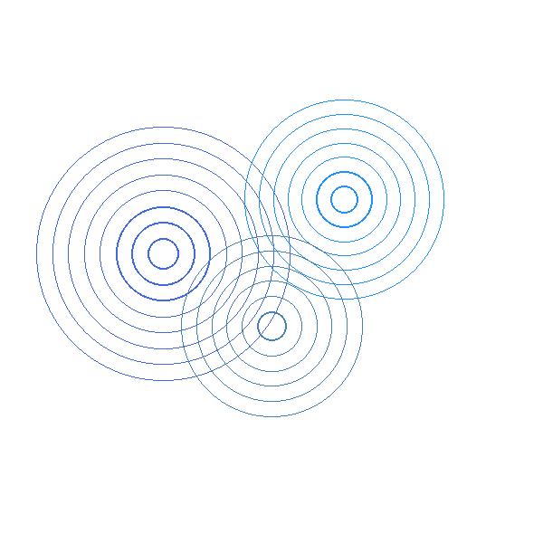
Three sets of concentric rings from different centers create water-ripple interference. Teaches: functions with parameters,
circle(), pensize for wave strength. -
Four-Fold Symmetric Doodle
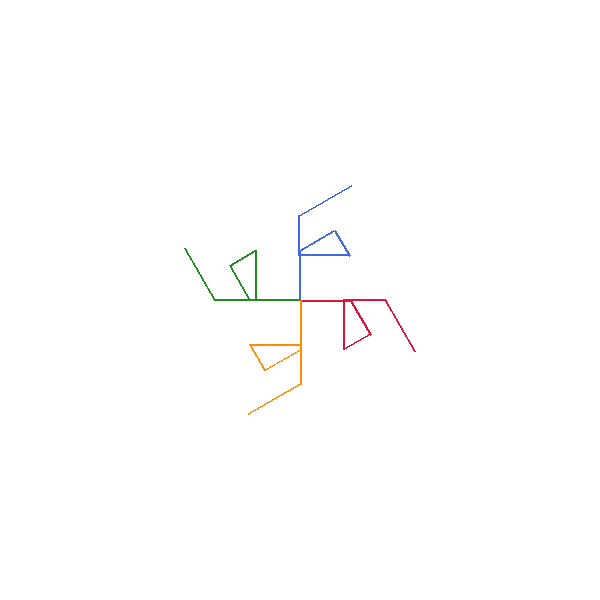
Record turtle moves as data, replay them rotated 90°, 180°, 270° — instant symmetry. Teaches: commands as data, replay with transformation, four-fold rotation.
-
Six-Fold Mandala
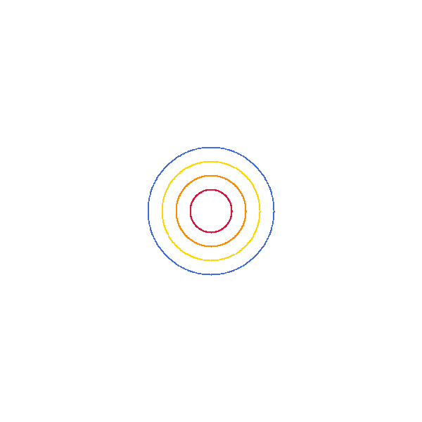
One mandala section drawn and rotated 60° six times to create a full mandala. Teaches:
360/6 = 60°, petal arcs withcircle(), radial composition. -
Mirror Butterfly
Right wing drawn from waypoints, left wing mirrored by negating x-coordinates. Teaches:
(-x, y)reflection, list comprehension for coordinate transforms. -
Truchet Tiles
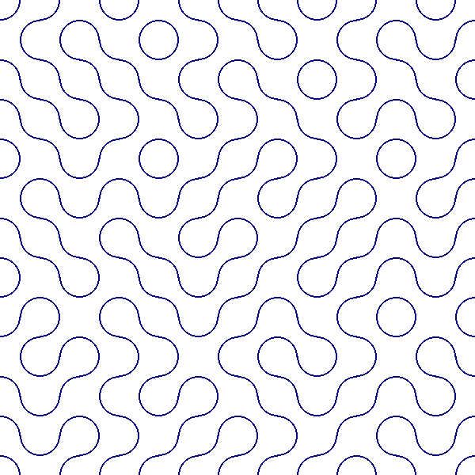
Random arc tiles that form continuous winding paths through local random choices. Teaches: emergence,
random.choice, and how local rules create global structure. -
Islamic Geometric Star
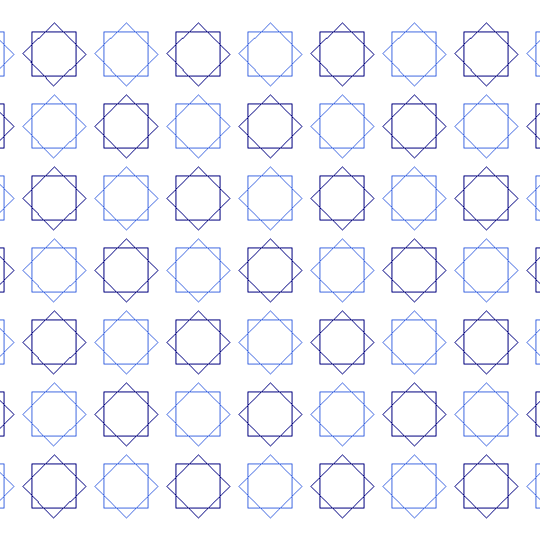
8-pointed stars tiled in a grid — two overlapping squares rotated 45° from each other. Teaches: exact geometric construction, grid tiling, checkerboard color alternation.
-
Mandelbrot Pixel Art
Pixel-art Mandelbrot set colored by escape time using
dot()on a grid. Teaches: complex number iteration, escape-time coloring, raster graphics. -
Julia Set Pixel Art
The Mandelbrot's cousin — same iteration, fixed
c, different startingzper pixel. Teaches: IFS concepts, how swapping z and c gives infinite fractal variety. -
Sierpiński Carpet
9-subdivision of a square with the center removed, recursed 4 levels deep. Teaches: 8-way recursion,
(8/9)^narea shrinkage, center-hole removal. -
Barnsley Fern
A photorealistic fern leaf from 5000 random-transformation dot placements. Teaches: Iterated Function Systems, probability-weighted choice, scatter plots.
-
Anti-Koch Snowflake
Koch snowflake variant where bumps alternate inward and outward at each depth level. Teaches: rule alternation, sign changes in recursive turn angles.
-
Pythagorean Tree
Squares growing from squares — the Pythagorean theorem made visible as a fractal. Teaches: geometric recursion, depth-driven color,
a² + b² = c²visually. -
T-Square Fractal
A central square sprouts four half-sized squares at each corner, five levels deep. Teaches: quaternary recursion, 4-ary recursion, layered draw order.
-
Lévy C Curve
A Koch-style fractal with 45° bumps that packs into a wing-like shape. Teaches: comparing fractal rules,
n / √2segment sizing, plane-tiling curves. -
Gosper Curve
The "flowsnake" — an L-system fractal that tiles hexagonal space. Teaches: string rewriting, L-systems, translating characters to turtle commands.
-
Dragon Curve
The Heighway Dragon — a self-avoiding fractal built by simulating paper folding with a list. Teaches: list manipulation for fractals, L/R turn encoding, never-crossing paths.
-
Hilbert Curve
A space-filling curve that visits every cell in a grid without crossing itself. Teaches: mutual recursion,
4^ncells at depthn, and space-filling geometry. -
Cantor Dust
Six rows of lines, each removing the middle third — infinite points, zero total length. Teaches: binary recursion, the
(2/3)^nshrinking ratio, Cantor's paradox. -
Fractal Tree
A binary recursive tree with a thick brown trunk fading to green leaf tips. Teaches: binary recursion,
backward()to return to fork points, depth-driven styling. -
Sierpiński Triangle
A triangle made of triangles made of triangles — the iconic self-similar fractal. Teaches: ternary recursion, base cases, and how depth controls fractal detail.
-
Koch Snowflake
A classic fractal snowflake built by recursively bumping every line segment outward. Teaches: recursion, base cases, and how one rule repeated creates infinite complexity.
-
Color-Banded Pentagon Spiral
A five-sided spiral colored in bands that align — or cut diagonally — across the arms. Teaches:
right(72),i // nbanding, and how period mismatch creates diagonal stripes. -
Spiral of Spirals
Twelve small square spirals arranged in a ring, each facing outward from the center. Teaches: reusable functions,
cos/sinplacement, and pattern-of-patterns composition. -
Fibonacci Spiral
Ten colored quarter-circle arcs — radii 1, 1, 2, 3, 5, 8, 13, 21, 34, 55 — tile perfectly. Teaches: the Fibonacci sequence,
a, b = b, a + b, and the golden ratio. -
Double Helix Spiral
Two interleaved spirals — red and blue — winding outward together from one loop. Teaches:
i % 2alternation, phase offset, and how one loop draws two patterns. -
Colored Logarithmic Spiral
A smooth, continuously curved spiral colored by angle — built with
cos()andsin(). Teaches: polar-to-Cartesian conversion,math.exp(), andgoto()for smooth curves. -
Inward Collapsing Spiral
A spiral that starts large and converges to a point, fading from deep blue to white. Teaches: decreasing sequences,
whileloops, and visual convergence. -
Triangular Spiral
A warm red-orange-gold spiral with sharp 120° triangular corners. Teaches:
i // nfor color bands vsi % nfor segment cycling. -
Hexagonal Spiral
A blue-to-green spiral with hexagonal corners — one number change from the square spiral. Teaches: how the turn angle alone determines a spiral's polygon shape.
-
Kaleidoscope Slice
A 12-section kaleidoscope wheel of gold, crimson, and orchid darts — every other slice a mirror image of its neighbor. Teaches: combining rotation and reflection to build radial symmetry from one 30° slice.
-
Pinwheel Tiling
The Conway–Radin pinwheel dissection fills the square with 500 tiny right triangles colored by the direction each points. Teaches: aperiodic tiling and recursion — every triangle splits into 5 smaller copies of itself.
-
Escher-Style Fish Tile
A 4×4 school of coral and sea-green fish whose noses, tails, backs, and bellies lock together with zero gaps. Teaches: how Escher tessellations work — every bump out of one edge is a matching notch in the opposite edge.
-
Voronoi Color Regions
Twelve seed points carve the canvas into a stained-glass map of colored territories. Teaches: the distance formula, nearest-neighbor classification, and raster drawing with
dot(). -
Penrose Rhombus Tiling
A sun of ten golden triangles deflates into gold thick and royal-blue thin rhombi with perfect five-fold symmetry. Teaches: two-rule recursive subdivision, the golden ratio, and why the pattern never repeats.
-
River Delta
A wide navy river fans out into dozens of ever-thinner sky-blue streams across a sandy canvas. Teaches: stochastic branching with pruning and
random.seed()for repeatable randomness. -
Coral Branch
A dark red trunk bursts into a randomly forking fan that fades through crimson to a cloud of pale pink tips. Teaches: variable-arity recursion, random angle variation, and color-by-depth gradients.
-
Leaf Venation
A filled pale-green leaf with a thick central vein, curving secondary veins, and tiny tertiary veins off each one. Teaches: biological branching structure and smooth curves from small forward+turn steps.
-
DNA Double Helix
Two bold sine waves — royal blue and crimson, offset by 180° — joined by gray rungs that shrink at each crossing. Teaches:
math.sin(), parametric plotting, and how a phase offset creates the helix illusion. -
Topographic Map
Nested wobbly contour rings paint an island from dark green shores through brown slopes to a white summit. Teaches: polar plotting, sine-perturbed radii, and outside-in filled elevation bands.
-
Epitrochoid
Five rainbow loops traced by a pen on a circle rolling around the outside of a bigger circle. Teaches: outer vs. inner rolling — one sign change separates this from the Spirograph.
-
Superellipse
A pointy star, a circle, and a rounded "squircle" — all from one equation with different exponents. Teaches: how a single exponent morphs a shape continuously through a parametric family.
-
Cassini Oval
A peanut-shaped oval, a figure-eight lemniscate, and two separate lobes — all from a constant product of distances to two foci. Teaches: the distance-product rule and how one constant changes a curve's topology.
-
Fermat's Spiral
Two mirrored arms, crimson and blue, wind outward with rings that pack tighter as they grow. Teaches: square-root scaling with
math.sqrt()and how the ± sign creates mirrored arms. -
Astroid
A four-cusped crimson star overlaid on silver string art — forty sliding-ladder segments whose envelope outlines the curve. Teaches: hypocycloids, the cos³/sin³ parametric form, and curve envelopes.
-
Mach Bands
Ten flat gray rectangles step from near-black to near-white, yet phantom stripes appear at every edge. Teaches: building hex color strings from a loop counter and perceptual edge enhancement.
-
Vasarely Sphere
A grid of navy dots swells near the center into a sphere bulging out of the flat page, op-art style. Teaches: distorting a regular grid with a radial function and mapping distance to size.
-
Scintillating Grid
Gray streets cross a dark background with white dots at each crossing — and phantom black dots flicker where you aren't looking. Teaches: precise grid placement and how local contrast drives global perception.
-
Impossible Triangle
The Penrose triangle woven from three L-shaped beams, each seamlessly in front of the next all the way around. Teaches: coordinate lists, point rotation with sin/cos, and how shading fakes 3-D.
-
Concentric Ring Pulsation
A bull's-eye of orange, blue, crimson, and teal rings that squeeze thinner toward the center and appear to shimmer. Teaches: warm/cool color contrast and filled-circle layering, largest to smallest.
-
Binary Tree Name
Each letter of a name traces its own colored path down a binary tree — left for 0, right for 1 — landing on its own leaf. Teaches:
ord(), extracting binary bits with//and%, and visualizing data as a drawing. -
Turtle Chase
A red hunter turtle chases a randomly wandering green prey, re-aiming every frame until "Caught!" Teaches: two-turtle programs,
math.atan2()targeting, and animation frame loops. -
Reaction-Diffusion Pattern
Four seed squares grow into organic blobs and stripes — the Gray-Scott chemistry behind animal-skin patterns. Teaches: grid simulation with lists, neighbor-based update rules, and emergence.